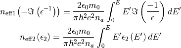
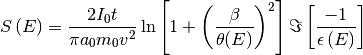

Dielectric function tools¶
New in version 0.7.
Number of effective electrons¶
New in version 0.7.
The Bethe f-sum rule gives rise to two definitions of the effective number (see [Egerton2011]):

where  is the number of atoms (or molecules) per unit volume of the
sample,
is the number of atoms (or molecules) per unit volume of the
sample,  is the vacuum permittivity, is the
elecron mass and
is the vacuum permittivity, is the
elecron mass and  is the electron charge.
is the electron charge.
The
get_number_of_effective_electrons()
method computes both.
Compute the electron energy-loss signal¶
New in version 0.7.
The
get_electron_energy_loss_spectrum()
“naively” computes the single-scattering electron-energy loss spectrum from the
dielectric function given the zero-loss peak (or its integral) and the sample
thickness using:

where  is the zero-loss peak integral,
is the zero-loss peak integral,  the sample
thickness,
the sample
thickness,  the collection semi-angle and the
characteristic scattering angle.
the collection semi-angle and the
characteristic scattering angle.